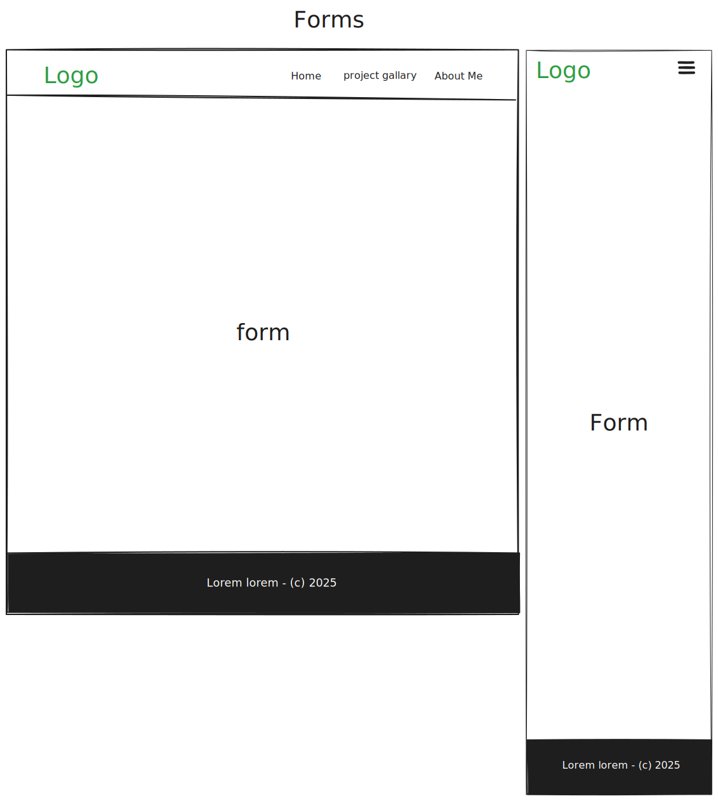

Project site plan
Site Name: Joseph Fiifi Mensah
My portfolio website name is the first thing people or potential clients see. A memorable and professional name will create a positive first impression. It will also improve my search engine ranking, making it easier for potential clients to find me.
Site Purpose
My portfolio website will many importantant purposes, especially for professional and creatives. It will be a platform to visually display my works and projects I have worked on.
Scenarios
- Need A business website, an e-commerce platform, or a custom web application ?
- Want to Contribute to popular web development projects?
- Want to improving the performance of a web application or redesigning a user interface?
Color Schema
- Teal : A medium to dark greenish-blue color, often associated with calmness and sophistication.
- Coral : A bright pinkish-orange color, reminiscent of coral reefs, bringing a vibrant and energetic feel.
- White : A clean, neutral color that pairs well with almost any other color, providing a crisp and professional look.


These colors together can create a visually appealing and balanced design for your portfolio website.
Typography
Headings : Montserrat
Body Text : Lora
Wireframe
